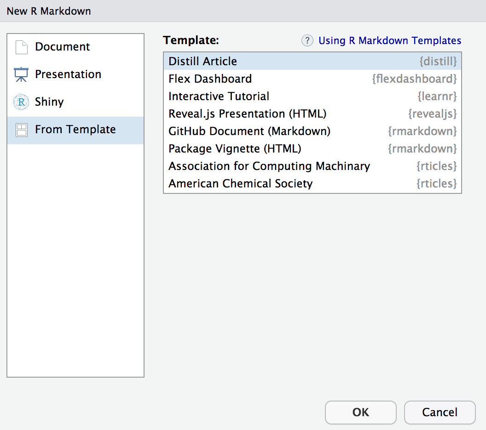
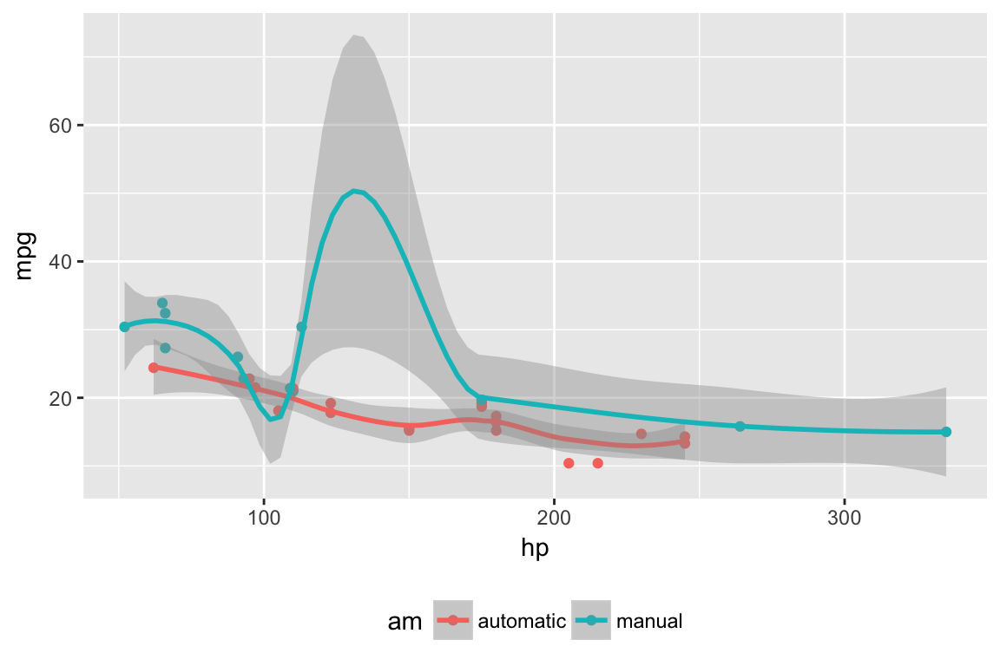
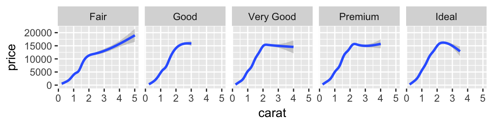

Distill for R Markdown is a web publishing format optimized for scientific and technical communication. Distill articles include:
- Reader-friendly typography that adapts well to mobile devices.
- Features essential to technical writing like LaTeX math, citations, and footnotes.
- Flexible figure layout options (e.g. displaying figures at a larger width than the article text).
- Attractively rendered tables with optional support for pagination.
- Support for a wide variety of diagramming tools for illustrating concepts.
- The ability to incorporate JavaScript and D3-based interactive visualizations.
- A variety of ways to publish articles, including support for publishing sets of articles as a Distill website or as a Distill blog.
Distill for R Markdown is based on the Distill web framework, which was originally created for use in the Distill Machine Learning Journal (Carter, Olah, and Satyanarayan 2016). Distill for R Markdown combines the technical authoring features of Distill with R Markdown, enabling a fully reproducible workflow based on literate programming (Knuth 1984).
Creating an article
To create an R Markdown document that uses the Distill format, first install the distill R package from CRAN:
install.packages("distill")Then, use the New R Markdown dialog within RStudio to create a new Distill article:

You can also create a new Distill article from the command line with:
library(distill)
create_article("article.Rmd")Distill articles use distill::distill_article as their output format, and typically include title, description, date, author/affiliation, and bibliography entries in their YAML front-matter:
---
title: "Distill for R Markdown"
description: |
Scientific and technical writing, native to the web
date: May 4, 2018
author:
- first_name: "Yihui"
last_name: "Xie"
url: https://github.com/yihui
affiliation: Posit Software, PBC
affiliation_url: https://www.posit.co
orcid_id: 0000-0003-0645-5666
- name: "JJ Allaire"
url: https://github.com/jjallaire
affiliation: Posit Software, PBC
affiliation_url: https://www.posit.co
- name: "Rich Iannone"
url: https://github.com/rich-iannone
affiliation: Posit Software, PBC
affiliation_url: https://www.posit.co
bibliography: biblio.bib
output: distill::distill_article
---Author names can be specified using explicit first_name and last_name fields or with a single name field. Author entries must have at least a name and url specified (the affiliation fields are optional). Specify an author’s Orcid ID using the orcid_id field.
The article’s description and author bylines are automatically rendered as part of the title area of the document.
The date field should be formatted either as month, day, year or as year, month, day (various notations are supported as long as the components appear in one of these orders).
The bibliography field is used to provide a reference to the Bibtex file where all of the sources cited in your article are defined. The citations section describes how to include references to these sources in your article.
Figures
Distill provides a number of options for laying out figures within your article. By default figures span the width of the main article body:

However, some figures benefit from using additional horizontal space. In this cases the layout chunk option enables you to specify a wide variety of other layouts.
For example, if we wanted to display a figure a bit outside the bounds of the article text, we could specify the l-body-outset layout via the layout chunk option:
```{r, layout="l-body-outset", fig.width=6, fig.height=1.5}
library(ggplot2)
ggplot(diamonds, aes(carat, price)) + geom_smooth() +
facet_grid(~ cut)
```
Note that when specifying an alternate layout you should also specify an appropriate fig.width and fig.height for that layout. These values don’t determine the absolute size of the figure (that’s dynamic based on the layout) but they do determine the aspect ratio of the figure.
See the documentation on figure layout for details on additional layout options.
The examples above are based on conventional R plots. Distill articles can also incorporate diagrams and interactive visualizations based on JavaScript and D3.
Tables
There are a number of options available for HTML display of data frames within Distill articles. Here, we use the paged_table() function to display a page-able view of the mtcars dataset built in to R:
```{r, layout="l-body-outset"}
library(rmarkdown)
paged_table(mtcars)
```library(rmarkdown)
paged_table(mtcars)Note that we used layout="l-body-outset" to cause the table to occupy slightly more horizontal space than the article text. All of available figure layout options work as expected for tables.
See the documentation on table display for details on the various techniques available for rendering tables.
Equations
Inline and display equations are supported via standard markdown MathJax syntax. For example, the following LaTeX math:
$$
\sigma = \sqrt{ \frac{1}{N} \sum_{i=1}^N (x_i -\mu)^2}
$$Will be rendered as:
\[ \sigma = \sqrt{ \frac{1}{N} \sum_{i=1}^N (x_i -\mu)^2} \]
Citations
Bibtex is the supported way of making academic citations. To include citations, first create a bibtex file and refer to it from the bibliography field of the YAML front-matter (as illustrated above).
For example, your bibliography file might contain:
@Book{xie2015,
title = {Dynamic Documents with R and knitr},
author = {Yihui Xie},
publisher = {Chapman and Hall/CRC},
address = {Boca Raton, Florida},
year = {2015},
edition = {2nd},
note = {ISBN 978-1498716963},
url = {http://yihui.name/knitr/},
}Citations are then used in the article body with standard R Markdown notation, for example: [@xie2015] (which references an id provided in the bibliography). Note that multiple ids (separated by semicolons) can be provided.
The citation is presented inline like this: (Xie 2015). If you have an appendix, a bibliography is automatically created and populated in it.
See the article on citations for additional details on using citations, including how to provide the metadata required to make your article more easily citable for others.
Footnotes and asides
Footnotes use standard Pandoc markdown notation, for example ^[This will become a hover-able footnote]. The number of the footnote will be automatically generated. 1
You can also optionally include notes in the gutter of the article (immediately to the right of the article text). To do this use the <aside> tag.
<aside>
This content will appear in the gutter of the article.
</aside>You can also include figures in the gutter. Just enclose the code chunk which generates the figure in an <aside> tag:
<aside>
```{r}
ggplot(mtcars, aes(hp, mpg)) + geom_point() + geom_smooth()
```
</aside>Table of contents
You can add a table of contents using the toc option and specify the depth of headers that it applies to using the toc_depth option. For example:
---
title: "Distill for R Markdown"
description: |
Scientific and technical writing, native to the web
output:
distill::distill_article:
toc: true
toc_depth: 2
---If the table of contents depth is not explicitly specified, it defaults to 3 (meaning that all level 1, 2, and 3 headers will be included in the table of contents).
The table of contents will automatically float to the left when the article is displayed at more than 1000px wide. To always show the table of contents on top specify toc_float: false:
output:
distill::distill_article:
toc: true
toc_float: falseCode blocks
By default the Distill format does not display the code for chunks that are evaluated to produce output (knitr option echo = FALSE).
The echo = FALSE default reflects the fact that Distill articles are often used to present the results of analyses rather than the underlying code. To display the code that was evaluated to produce output you can set the echo chunk option to TRUE:
```{r, echo=TRUE}
1 + 1
```To include code that is only displayed and not evaluated specify the eval=FALSE option:
```{r, eval=FALSE, echo=TRUE}
1 + 1
```There are a number of default values that Distill establishes for knitr chunk options (these defaults also reflect the use case of presenting results/output rather than underlying code):
| Option | Value | Comment |
|---|---|---|
echo |
FALSE |
Don’t print code by default. |
warning |
FALSE |
Don’t print warnings by default. |
message |
FALSE |
Don’t print R messages by default. |
comment |
NA |
Don’t preface R output with a comment. |
R.options |
list(width = 70) |
70 character wide console output. |
Keeping R code and output at 70 characters wide (or less) is recommended for readability on a variety of devices and screen sizes.
As illustrated above, all of these defaults can be overridden on a chunk-by-chunk basis by specifying chunk options.
You can also change the global defaults using a setup chunk. For example:
```{r setup, include=FALSE}
knitr::opts_chunk$set(
echo = TRUE,
warning = TRUE,
message = TRUE,
comment = "##",
R.options = list(width = 60)
)
```Code folding
You can use the code_folding option to hide code by default but allow readers to optionally show it. For example:
---
title: "Distill for R Markdown"
description: |
Scientific and technical writing, native to the web
output:
distill::distill_article:
code_folding: true
---When code folding is enabled, readers will see a “Show code” button like this for each code chunk:

You can also specify code_folding on a per-chunk basis. For example:
```{r, code_folding=TRUE}
1 + 1
```Provide a string rather than TRUE to customize the caption (the default is “Show code”).
Syntax highlighting
Syntax highlighting for R code is done using the downlit package, which provides automatic linking of R functions to their online documentation. By default, highlighting is done using colors optimized for accessibility and color contrast.
You can customize highlighting behavior using the highlight and highlight_downlit options. For example, to use the Pandoc “haddock” highlighting theme and disable the use of downlit, you would do this:
---
title: "Distill for R Markdown"
description: |
Scientific and technical writing, native to the web
output:
distill::distill_article:
highlight: haddock
highlight_downlit: false
---Available options for highlight include:
| Option(s) | Description |
|---|---|
default |
Default (accessible) theme |
rstudio |
RStudio editor theme |
haddock, kate, monochrome, pygments, tango |
Pandoc highlighting themes. |
Path to .theme file |
Custom Pandoc theme file. |
Appendices
Appendices can be added after your article by adding the .appendix class to any level 1 or level 2 header. For example:
## Acknowledgments {.appendix}
This is a place to recognize people and institutions. It may also be a good place
to acknowledge and cite software that makes your work possible.
## Author Contributions {.appendix}
We strongly encourage you to include an author contributions statement briefly
describing what each author did.Footnotes and references will be included in the same section, immediately beneath any custom appendices.
Theming
The appearance of a Distill article can be customized using a theme and CSS just like Distill sites and blogs. You can use the create_theme() function to add a theme CSS file in the current working directory.
For example:
create_theme(name = "theme") Read more about how to customize a Distill theme. To apply a custom theme to an article, add a theme key to your article’s YAML front-matter:
---
title: "The Sharpe Ratio"
output:
distill::distill_article:
toc: true
theme: theme.css
---One of the fastest ways to change the default appearance is to use custom Google fonts. To do this, you need to do two things:
Embed the font using the @import method, and
Specify the font in the CSS file.
You can do both of these things inside your theme.css file. For example, here is an article styled with the demo theme detailed here.
Screenshot
theme.css snippet
/* base variables */
/* Edit the CSS properties in this file to create a custom
Distill theme. Only edit values in the right column
for each row; values shown are the CSS defaults.
To return any property to the default,
you may set its value to: unset
All rows must end with a semi-colon. */
/* Optional: embed custom fonts here with `@import` */
/* This must remain at the top of this file. */
@import url('https://fonts.googleapis.com/css2?family=Amiri');
@import url('https://fonts.googleapis.com/css2?family=Bitter');
@import url('https://fonts.googleapis.com/css2?family=DM+Mono');
html {
/*-- Main font sizes --*/
--title-size: 50px;
--body-size: 1.06rem;
--code-size: 14px;
--aside-size: 12px;
--fig-cap-size: 13px;
/*-- Main font colors --*/
--title-color: #000000;
--header-color: rgba(0, 0, 0, 0.8);
--body-color: rgba(0, 0, 0, 0.8);
--aside-color: rgba(0, 0, 0, 0.6);
--fig-cap-color: rgba(0, 0, 0, 0.6);
/*-- Specify custom fonts ~~~ must be imported above --*/
--heading-font: "Amiri", serif;
--mono-font: "DM Mono", monospace;
--body-font: "Bitter", sans-serif;
--navbar-font: "Amiri", serif;
}
/* More properties ... */Acknowledgments
Distill for R Markdown builds on the work of many individuals and projects. Shan Carter, Ludwig Schubert, and Christopher Olah created the Distill web framework. John MacFarlane created the Pandoc universal markup converter. Davide Cervone and Volker Sorge created the MathJax library for rendering mathematical notation on the web. Mike Bostock created the D3 library for producing dynamic, interactive data visualizations for the web. We are grateful for the spirit of generosity that moved these individuals to create high-quality open source software for the benefit of all.